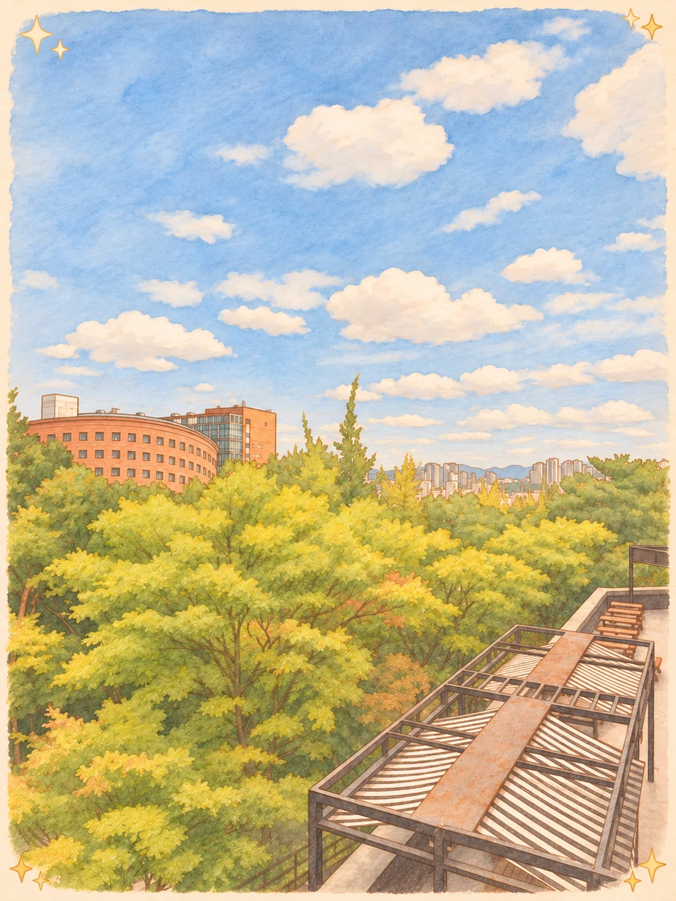

캠퍼스 다이어리
한국어
/
中文
/
English
웹 프로그래밍 과제
2주차부터 7주차까지의 웹페이지 모음입니다.

2–3주차
캠퍼스 소개
캠퍼스 이야기 보기
중앙도서관, B333 교실, 운동장
4주차
지도와 인터랙션
Google 지도
CSV 데이터 시각화
Canvas 미니게임
5주차
음식 취향 테스트
테스트 시작하기
8문항과 나의 취향 기록
6주차
이미지와 목소리
사진 실험실
음성 만들기
7주차
캠퍼스 한 끼
추천 게시판 보기